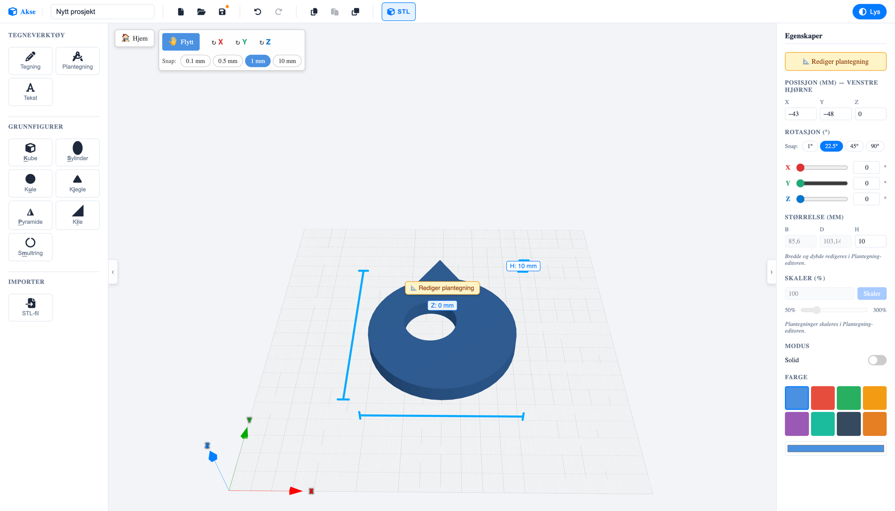
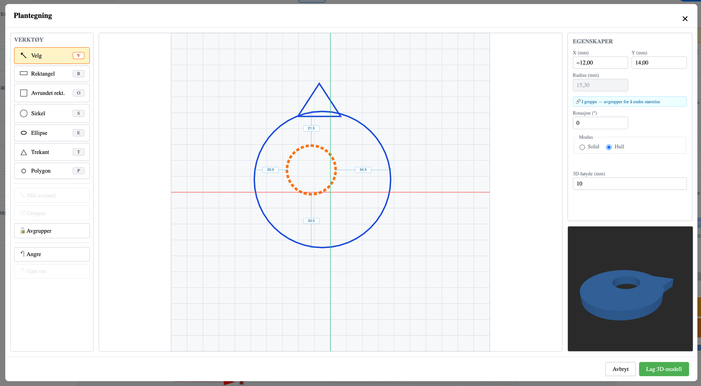

A 3D tool for the maker space
Draw. Build. Print.
Akse is a 3D modelling tool made for kids and teens. Combine primitive shapes, draw your own 2D blueprints — and export the model as an STL file, ready for the 3D printer.
- ✓ Right in your browser
- ✓ Free to use
- ✓ STL export for 3D printing

01 / What is Akse?
3D modelling anyone can master
Akse means axis — as in X, Y and Z. That's the whole idea: a tool where kids and teens learn to think in three dimensions, without drowning in advanced menus. You build models by placing and shaping primitive shapes — or by drawing your own outline — and everything is measured in real millimetres, so what you see on screen is what you hold in your hand after printing.
Akse is made by Skaperiet, a maker space for kids and teens, and is used in courses and workshops where the path from idea to finished 3D print should be as short as possible. Everything runs right in the browser — nothing to install.
For kids and teens
Simple tools, clear words and big buttons. Designed for curious hands — on both computer and tablet.
Real millimetres
All measurements are in mm. What the kids draw matches what comes out of the 3D printer.
Ready to print
One click exports the whole project as an STL file — the format every 3D printer understands.
02 / How it works
From idea to 3D print in three steps
-
Build with shapes
Choose from box, cylinder, sphere, cone, pyramid, wedge and torus — or draw your own outline with freehand drawing, 3D text and blueprints. Shapes land right on the work plane.
-
Shape and combine
Move, rotate and scale with millimetre precision and smart snapping. Set a shape to hole mode and it cuts through the others — perfect for screw holes, windows and secret compartments.
-
Export and print
Press the STL button and the whole model downloads as a single print-ready file. You can also import STL files others have made and build on them.
03 / The blueprint tool
Blueprint: draw in 2D, get 3D
The most powerful tool in Akse is Blueprint — a dedicated drawing board where you draw the shape from above on millimetre paper, and lift it into a 3D model with one click.


-
Seven drawing tools
Rectangle, rounded rectangle, circle, ellipse, triangle and polygon — each with its own keyboard shortcut, so your hands learn the tool.
-
Solid or hole
Each shape can be solid (blue) or a hole (orange, dashed). Holes are cut out of the model — that's how you make a key fob in under a minute, for example.
-
Group with distance guides
Group shapes and the distance between them shows as editable measurements — type in exact numbers, and the shapes stay together when you move and scale them.
-
Make a 3D model
Choose a 3D height in millimetres and press "Make 3D model". The preview shows the result before you commit — and you can always go back and edit the blueprint.
04 / The building blocks
Seven primitive shapes. Endless possibilities.
Everything in Akse starts with simple shapes. Combine them as solid blocks or holes, and they grow into spaceships, jewellery, name tags and spare parts. Each shape has its own key on the keyboard.
-
Box
K -
Cylinder
S -
Sphere
U -
Cone
J -
Pyramid
P -
Wedge
I -
Torus
M -
…and 3D text, freehand drawing and STL import
05 / Features
Small tool. Big possibilities.
-
📐 Millimetre precision
Move with snapping at 0.1 / 0.5 / 1 / 10 mm, and rotate with snapping at 1° / 22.5° / 45° / 90°. Measurements show directly on the model and can be edited with the keyboard.
-
🕳️ Boolean holes
Any shape can be set to "hole" mode and cut out of the model. Screw holes, letter slots and peepholes — without advanced CAD.
-
💾 Save where you like
Save projects in the cloud with a Skaperiet account, or as a file on your own machine. Projects are small JSON files that are easy to share.
-
↩️ Safe to experiment
Full undo and redo history (Ctrl+Z / Ctrl+Shift+Z), copy and paste, and duplicate with Ctrl+D to create patterns.
-
🎨 Colours and themes
Eight fresh colours for your shapes, and both light and dark themes in the editor — for late nights at the maker space.
-
👆 Mouse or touch
Full mouse support with handles and shortcuts — and a simplified touch layout that works well on tablets.
06 / Self-host
Open source — run Akse anywhere
Akse is free software under the AGPL-3.0 licence, and the entire source code is openly available on GitHub. Schools, maker spaces and the curious can run their own Akse — completely free. Here's how to get started:
-
Get the source code
You'll need Node.js (version 22 or newer) and git on your machine.
git clone https://github.com/joachimhs/akse3d.git cd akse3d -
Install and run
npm install npm run devOpen http://localhost:5173 in your browser — your own Akse runs there. Projects are saved locally in the browser.
-
Embed in your own website
Akse is also a Svelte package (
@skaperiet/akse) that can be embedded in your own websites with your own storage backend through simple ports. See the README on GitHub for details.
AGPL-3.0 means Akse is free to use, modify and host — as long as your version also shares its source code. Want to use Akse in a closed, commercial solution? Skaperiet offers a commercial licence.
Ready to build something?
Akse is free and runs right in your browser. Start with a box — see where it goes.
Open the Akse editorWorks in all modern browsers · No installation